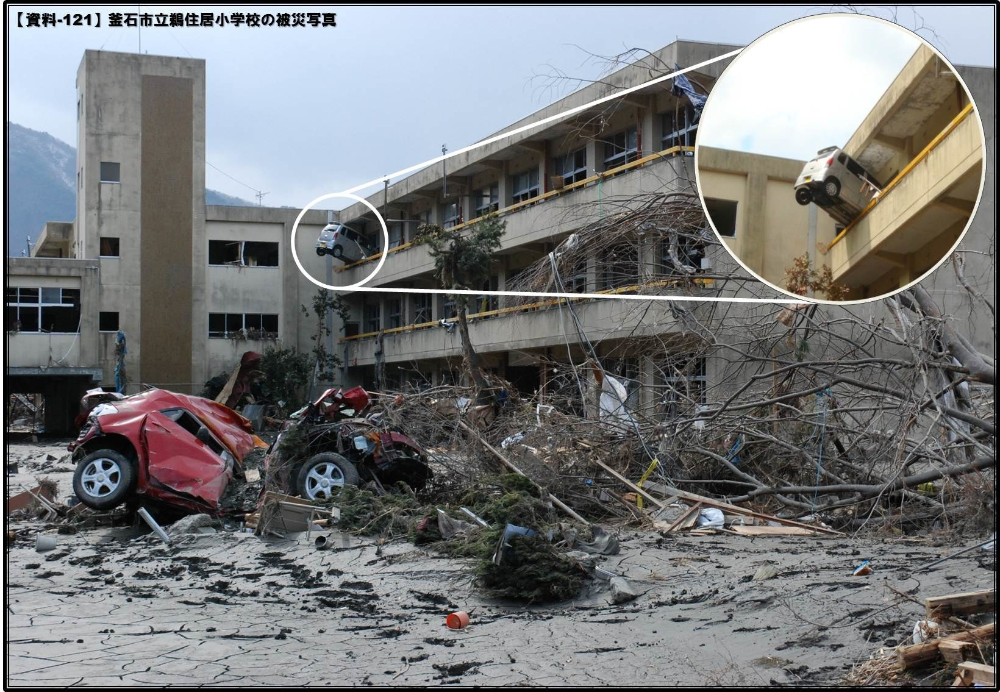

Teaching Workshop

Teaching Workshop
Friday, May 10, 2013
A daylong opportunity for K-12 teachers to provide training and exposure contemporary and historical issues related to Japan.
This year our sessions will explore historical, linguistic, and cultural aspects of Japan, with a special emphasis on the new challenges facing Japan. Our presenters will draw on both the theory and pedagogical practices to help K-12 teachers incorporate Japan in the curriculum.
A rare opportunity to learn about new ways to bring Japan into the classroom.
Workshop Topics
“Lessons from Minamata to Fukushima: Economic Growth vs. Environmental Health”
“Traveling Voices of Japan”
“How to speak and write Japanese words with confidence”
“Three Takes on the Beginning: The Myth, Historiography, and Archaeology of Early Japan”
Details at:
http://cgs.psu.edu/japanfoundation.shtml
Free registration at:
http://cgs.psu.edu/JapanFoundationRegistration.shtml
All meals on the 10th are included.
Free lodging in State College for the evening of the 9th and 10th.
Act 48 hours available
CD-ROM
Course materials provided
Open to local K-12 educators
as well as graduate and undergraduate students in the
College of Education.
Ability to apply for $1000 impact grants for proof of integrating what you learn into your classroom. Impact Grants.
A daylong opportunity for K-12 teachers to provide training and exposure contemporary and historical issues related to Japan.
This year our sessions will explore historical, linguistic, and cultural aspects of Japan, with a special emphasis on the new challenges facing Japan. Our presenters will draw on both the theory and pedagogical practices to help K-12 teachers incorporate Japan in the curriculum.
8:30 - 9:00 a.m.
Registration (Coffee, tea, and breakfast pastries
will be available)
9:00 - 9:15 a.m.
Welcome and Introductions
Jon Abel
9:15 - 10:15 a.m.
Lessons from Minamata and Fukushima: Economic Growth vs. Environmental Health
Jessamyn Abel
10:15 - 10:30 a.m
Break
10:30 - 11:30 a.m.
Traveling Voices of Japan
Reiko Tachibana
11:30 - 1:00 p.m.
Lunch (provided)
1:00 - 2:00 p.m.
How to speak and write Japanese words with confidence
Haruko Iwami
2:00 - 3:00 p.m.
Three Takes on the Beginning: The Myth, Historiography, and Archaeology of Early Japan
Charlotte Eubanks
3:30 - 4:30 p.m.
Q&A with presenters/ Discussion of Impact Awards